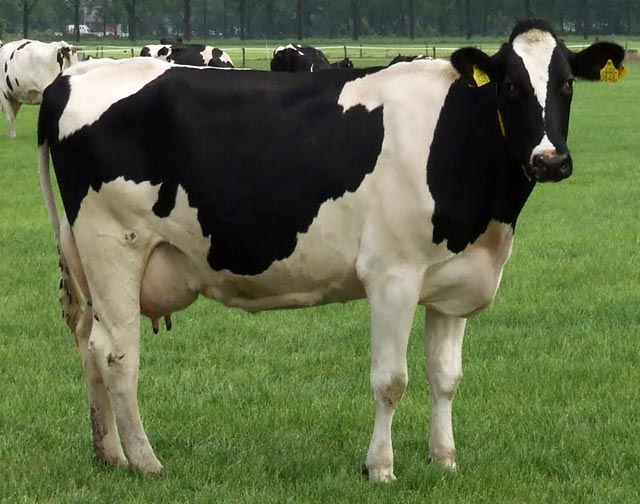

Friday, April the 18th, 2014
back to: title, date or indexes

Chapter Seven of Mr Key's Bumper Book Of Birds, a work in progress.
The cow is a type of bird. It is also known as the misprint bird, because by rights there should be an r between the c and the o to make crow, an indubitable bird. What has happened is that certain slapdash ornithological writers, who skimp on proofreading, have given cow where they mean crow. The error is more common in written than in verbal ornithology. In the latter, the varying pronunciations of the letter o tend to alert even the most misty-brained bird expert to the difference.
In cow, the o is pronounced as in ow!, the exclamation you make when, for example, a crow alights on your head and pecks at your scalp with its sharp fearsome beak in order to gobble up the various little beetles and creepy-crawlies and breadcrumbs scattered in your bouffant because you have not bothered to wash your hair for several weeks.
In crow, on the other hand, the o is pronounced as in the surname of Sebastian Coe, the high speed Olympic champion better known for his wrestling bouts with William Hague MP in the gymnasium of the Houses of Parliament. Interestingly, if we substitute the wrestler's initial C for a K, thus Koe, we arrive at the Flemish word for cow. In that case, however, it is well to bear in mind that the o in the Flemish koe is pronounced like the o in coo, which is the sound made by doves and pigeons and various other birds.
You can see how this all hangs together.
Only a nitwit would think a cow was actually a bird, as opposed to being a misprint bird. Cows have neither beaks nor feathers nor wings nor talons. Nor are they capable of flight. It is true that there is a nursery rhyme in which a cow jumps over the moon, and that high leaping can in some circumstances be mistaken for flying. It is possible that the rhyme was originally transcribed by a slapdash ornithologist who skimped on proofreading, and what was meant was “the crow flew over the moon”. Visually, you might see a crow flying “over” the moon depending on your angle of view, from your position in a muddy field on earth in relation to both the cow—oops!, the crow—and the moon. Though it is not often one sees a crow flying around the sky at night, a time when most crows are fast asleep in their nests. Cows, on the other hand, do not make nests. They sleep in byres.
Hooting Yard on the Air, May the 1st, 2014 : “Udo Luckner And The Magical Nucleus” (starts around 08:11)
Hooting Yard on the Air, June the 28th, 2018 : “The Robin” (starts around 24:23)